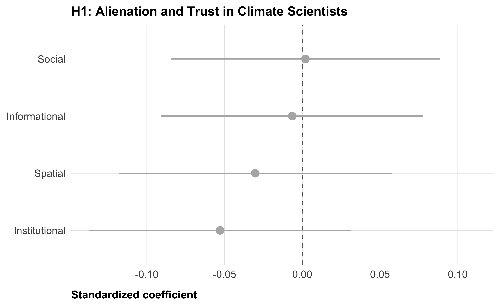
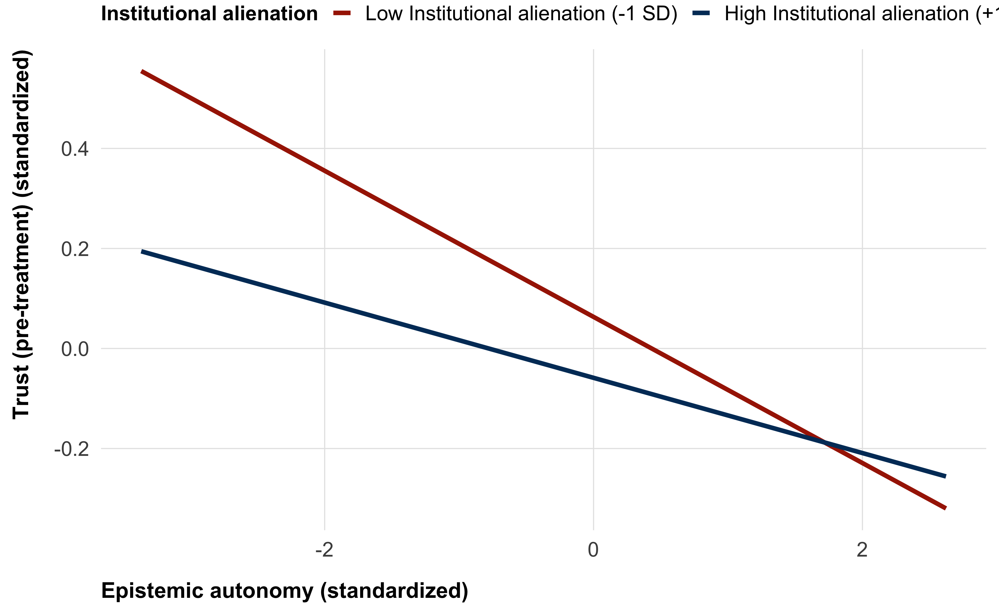
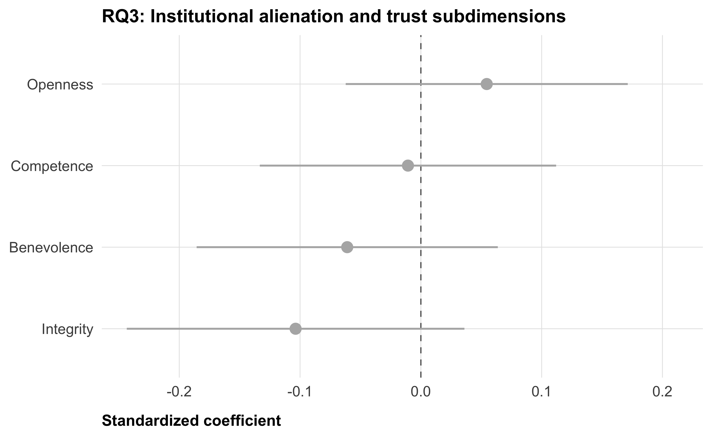

| Subdimension | Items (bipolar anchors) |
|---|---|
| Competence | incompetent–competent; unintelligent–intelligent; unqualified–qualified |
| Integrity | dishonest–honest; unethical–ethical; insincere–sincere |
| Benevolence | unconcerned–concerned; uneager–eager to improve lives; inconsiderate–considerate |
| Openness | not open–open to feedback; unwilling–willing to be transparent; little–great attention to others' views |
Preregistration: Alienation and Trust in Climate Scientists in the US
Abstract
Trust in climate scientists is declining and deeply polarized in the United States. Prominent psychological accounts attribute distrust to cognitive deficiencies — lack of knowledge, motivated reasoning, or conspiracist thinking — treating distrust as a product of individual irrationality. We test an alternative: the alienation model of science distrust, which holds that distrust stems from structural exclusion from science rather than individual cognitive failings. People who are structurally excluded from science — institutionally, socially, geographically, or informationally — will be more likely to feel alienated from science, and therefore more likely to distrust scientists. This distrust may be rational: those who are structurally excluded from an institution have less influence over its decisions, which increases their vulnerability and may warrant greater wariness. We derive and test specific individual-level predictions of the alienation model using data from a large, nationally representative US sample (N ≈ 22,000). All analyses are correlational, and all hypotheses and analytical procedures are pre-registered prior to data collection.
Note
This preregistration has not yet been registered on the OSF and may change within the next days.
Background
Trust in climate scientists is a critical determinant of climate change belief and policy support, yet it is declining and deeply polarized in the United States. Much of the existing literature explains distrust in scientists through individual-level psychological mechanisms: people distrust scientists because they lack scientific knowledge, engage in motivated reasoning, or hold conspiracist or populist thinking styles. These accounts share a common assumption — that distrust reflects some form of cognitive failure or irrationality on the part of the distruster.
The alienation model of science distrust, developed by Gauchat (2011, 2012), offers a structurally grounded alternative. Rooted in the work of theorists including Beck (1992), Giddens (1991), and Habermas (1989), the model argues that increasingly complex societies require increasingly specialized governance expertise, producing technocratic institutions run by knowledge elites. Those who are excluded from these institutions — who lack the cultural capital, social proximity, geographic access, or informational exposure to participate — experience a loss of agency and a sense of alienation. This alienation, the model predicts, rationally translates into distrust: people who have no influence over an institution’s decisions are more vulnerable to its choices and have less reason to extend it trust (Desmond, Lavis, and Sherr 2023).
This framing has important implications. It suggests that distrust in climate scientists among demographically underrepresented groups — racial minorities, people with less education, rural residents — is not primarily a product of irrationality or misinformation, but a predictable response to structural exclusion. Despite its theoretical appeal, the alienation model has not yet been directly tested with respect to climate scientists. Gauchat’s own empirical work tested only the high-level prediction that increasing technocratization would produce declining aggregate trust in science. More specific, individual-level predictions derived from the model remain untested.
Theoretical Framework
We define alienation as a lack of access to climate scientists, climate science, and climate science institutions. In this research project, we focus on perceived alienation, based on people’s self-reports. We distinguish four dimensions of perceived alienation, informed by research on psychological distance to science (Rutjens, Linden, and Lee 2021; Veckalov, Amodio, and Rutjens 2024):
Institutional alienation refers to the lack of representation within and influence over scientific institutions. People who do not see themselves reflected in the demographics of climate scientists, or who feel they have no voice in how scientific knowledge is produced and used, experience institutional alienation.
Social alienation refers to the social distance between oneself and climate scientists as people—a sense that scientists inhabit a different social world, with different values, backgrounds, and life experiences.
Spatial alienation refers to geographic distance from scientific institutions. People who live far from universities, research centers, and other sites of scientific activity have fewer opportunities for incidental contact with scientists and their work.
Informational alienation refers to limited exposure to scientific information in everyday life—through news, social media, personal conversations, or in-person events. People who rarely encounter scientific information are informationally distant from the scientific world.
We propose that these four dimensions are empirically distinguishable and may have different relationships with trust in climate scientists. We test predictions about each dimension separately.
Hypotheses and Research Questions
Hypotheses
H1 — Association between alienation and trust: Perceptions of alienation are negatively associated with trust in climate scientists.
H2 — Epistemic autonomy as moderator of the alienation-trust relationship: Climate scientists claim epistemic authority over matters of public concern. People with a high need for epistemic autonomy, who are motivated to form their own judgments rather than defer to authorities, should be particularly distrusting of climate scientists when they experience alienation. We therefore predict that need for epistemic autonomy moderates the relationship between alienation and distrust, such that the alienation–distrust association is stronger among high-autonomy individuals.
For both hypotheses, we test the four dimensions of alienation separately.
Research Questions
RQ1 — Structural predictors of institutional and social alienation: Do people who are demographically underrepresented among climate scientists—by race, education, gender, or social class—report higher institutional and social alienation? This tests whether self-reported perceptions of alienation map onto objective indicators of structural underrepresentation.
RQ2 — Structural predictors of spatial alienation: Do people who live further from scientific institutions—operationalized as geographic distance from the nearest research university—report higher spatial alienation? This tests whether geographic distance predicts perceived distance.
RQ3 — Alienation and dimensions of trust: Alienated people may still recognize climate scientists’ technical competence, but have more reason to doubt their benevolence, integrity, and openness—dimensions of trust that reflect whether an institution acts in one’s interest rather than merely whether it is capable. We therefore ask whether alienation is more strongly associated with distrust along the dimensions of benevolence, integrity, and openness than along the dimension of competence.
RQ4 — Alienation and policy role: People who are alienated from climate scientists may be more resistant to granting scientists a role in shaping public policy. We ask whether alienation predicts opposition to scientists having influence over climate policy.
Data
Source
We use pre-treatment data from the Strengthening trust in climate scientists megastudy (N ≈ 22,000), a large collaborative experiment testing 20 interventions to strengthen trust in climate scientists in the United States. Participants are recruited from a national, non-probability opt-in panel (CloudResearch) with cross-quotas on gender × age and gender × race based on 2024 US Census Bureau population estimates.
This project presents correlational analyses of the megastudy pre-treatment measures. No experimental comparisons are made. No data has been collected yet.
Ethics
The megastudy has received ethics approval from Stanford University (IRB-85756) and ETH Zurich (26 ETHICS-093).
Measures
Alienation from climate science
Except for informational alienation, all items use a 7-point agree/disagree response scale (1 = strongly disagree, 7 = strongly agree). Higher scores indicate greater alienation. We will use composite scores (the mean) of all items present in one dimension.
Institutional alienation (2 items)
- The prospect of working as a climate scientist has always seemed beyond my reach.
- Careers in climate research are accessible only to a privileged few.
Spatial alienation (2 items)
- Climate science has no positive impact on my local area.
- Very few climate scientists live or work in my local area.
Informational alienation (6 items)
“How often do you see or hear information about climate change in the following places?”
- Traditional media (e.g., newspapers, TV, radio)
- Online news (e.g., news websites, podcasts, YouTube)
- Social media (e.g., Facebook, TikTok, Instagram)
- Fiction (e.g., films, series, books, comics)
- Personal conversations (e.g., talking with friends or family, text messages, messaging apps)
- In-person events (e.g., museums, public talks)
Response options: 1 = Never, 2 = Rarely, 3 = Occasionally, 4 = Frequently, 5 = Very frequently. Items are reverse-coded before computing the composite, so that higher scores indicate less exposure (more informational alienation).
Trust in climate scientists
Single-item trust
The primary outcome is a single outcome trust measure, assessed pre-treatment in the megastudy.
“How much do you trust climate scientists?” (slider, 0–100).
Multidimensional trust (secondary outcome, 12 items)
For a robustness check, we use a more detailed 12-item trust scale covering four subdimensions (3 items each), assessed on 0–100 sliders (0 = most negative, 100 = most positive); see Table 1. Subdimension composites are computed as the mean of the three items within each subdimension. The overall composite (trust_multidimensional) is the mean of all 12 items.
The reason this scale is used only for a robustness check is that, in the megastudy, it is asked “post-treatment”. We can therefore only use answers from the control group for unconfounded results.
Need for epistemic autonomy (6 items)
[Beebe et al. (2019); adapted]
“Please indicate how much you agree or disagree with the following statements” (1 = strongly disagree, 7 = strongly agree):
- I like to think things through for myself.
- I like to figure things out for myself.
- I like to make up my own mind about things.
- I only believe something if I can see for myself that it is true.
- I don’t go along with the opinions of others without thinking things through for myself.
- I have never really questioned the things I have been taught to believe. [reverse-scored]
We will use a composite measure (mean) of all items items, reverse-coding item 6.
Structural indicators (for RQ1 and RQ2)
- Race/ethnicity: White, Black, Hispanic, Asian, Other (categorical)
- Education: 6-level ordinal (less than high school → doctorate)
- Gender: Male, Female, Other
- Income: 5-level ordinal (<$30k to ≥$168k)
- Geographic distance (
dist_univ_km): distance (km) from the participant’s ZIP code to the nearest R1 research university, computed using ZIP-code centroid coordinates
Policy role of scientists (for RQ4)
Four items assessing support for scientists having a role in climate policy (e.g., collaborating with policymakers, advocating for policies, communicating findings; 0–100 sliders). We will use a composite score (mean) of all items.
Analysis Plan
Overview
All models are estimated using OLS regression with heteroskedasticity-robust standard errors (HC2, via the sandwich package). All continuous predictors and outcomes are standardized (z-scored) before model fitting, so reported coefficients are standardized betas and directly comparable across dimensions. Within each hypothesis and research question, multiple comparisons are corrected using the Benjamini-Hochberg (BH) false discovery rate procedure (Benjamini and Hochberg 1995).
Code chunks below demonstrate each analysis on simulated data. Function definitions are printed before their first use so the exact model specification is part of the preregistration record.
H1: Association between alienation and trust
For each of the four alienation dimensions, we run separate regressions. We regress the single-item pre-treatment trust measure (trust_pre) on the respective alienation composite. We do not include covariates. BH correction is applied across the four tests (one per dimension).
run_ols_model <- function(data,alienation_dims <- c(
"alien_inst_mean", "alien_social_mean",
"alien_spatial_mean", "alien_info_mean"
)
h1_results <- map_dfr(alienation_dims, \(pred)
run_ols_model(data, outcome = "trust_pre", predictor = pred)
) |>
mutate(p_adjusted = p.adjust(p.value, method = "BH"))
h1_results |>
select(predictor, estimate, std.error, statistic, p.value, p_adjusted, n) |>
mutate(predictor = str_remove(predictor, "_mean") |>
str_remove("alien_") |> str_to_title()) |>
rounded_numbers() |>
rename(
Dimension = predictor, Beta = estimate, SE = std.error,
t = statistic, p = p.value, `p (BH-adj)` = p_adjusted, N = n
) |>
tt(caption = "H1: Effect of alienation dimensions on single-item trust (standardized beta, HC2 SEs)")| Dimension | Beta | SE | t | p | p (BH-adj) | N |
|---|---|---|---|---|---|---|
| Inst | -0.053 | 0.043 | -1.227 | 0.220 | 0.881 | 500 |
| Social | 0.002 | 0.044 | 0.046 | 0.963 | 0.963 | 500 |
| Spatial | -0.030 | 0.045 | -0.677 | 0.499 | 0.963 | 500 |
| Info | -0.007 | 0.043 | -0.151 | 0.880 | 0.963 | 500 |

H2: Epistemic autonomy as moderator
For each alienation dimension, we estimate an interaction model:
\[ \text{trust\_pre} \sim \text{alienation}_d \times \text{epist\_auton\_mean} + \text{age} + \text{gender} + \text{race} \]
We report the interaction coefficient (alienation × epistemic autonomy) for each dimension, with BH correction across the four interaction tests.
run_interaction_model <- function(data,h2_results <- map_dfr(alienation_dims, \(pred)
run_interaction_model(
data,
outcome = "trust_pre",
predictor = pred,
moderator = "epist_auton_mean",
covariates = c("age", "gender", "race")
)
) |>
filter(str_detect(term, ":")) |>
mutate(p_adjusted = p.adjust(p.value, method = "BH"))
h2_results |>
select(predictor, moderator, estimate, std.error, statistic, p.value, p_adjusted, n) |>
mutate(predictor = str_remove(predictor, "_mean") |>
str_remove("alien_") |> str_to_title()) |>
rounded_numbers() |>
rename(
`Alienation dim.` = predictor, Moderator = moderator,
Beta = estimate, SE = std.error, t = statistic,
p = p.value, `p (BH-adj)` = p_adjusted, N = n
) |>
tt(caption = "H2: Interaction of each alienation dimension with epistemic autonomy predicting trust_pre")| Alienation dim. | Moderator | Beta | SE | t | p | p (BH-adj) | N |
|---|---|---|---|---|---|---|---|
| Inst | epist_auton_mean | 0.039 | 0.048 | 0.824 | 0.410 | 0.974 | 500 |
| Social | epist_auton_mean | 0.026 | 0.050 | 0.526 | 0.599 | 0.974 | 500 |
| Spatial | epist_auton_mean | -0.002 | 0.047 | -0.032 | 0.974 | 0.974 | 500 |
| Info | epist_auton_mean | 0.003 | 0.047 | 0.058 | 0.954 | 0.974 | 500 |

RQ2: Structural predictor of spatial alienation
We regress spatial alienation on log-transformed geographic distance to the nearest research university, adjusting for age, gender, race, and education. This is a single test; no BH correction needed.
rq2_result <- run_ols_model(
data |> mutate(log_dist_univ_km = log(dist_univ_km)),
outcome = "alien_spatial_mean",
predictor = "log_dist_univ_km",
covariates = c("age", "gender", "race", "education")
)
rq2_result |>
select(predictor, estimate, std.error, statistic, p.value, n) |>
mutate(predictor = "log(distance to university, km)") |>
rounded_numbers() |>
rename(Predictor = predictor, Beta = estimate, SE = std.error,
t = statistic, p = p.value, N = n) |>
tt(caption = "RQ2: Geographic distance predicting spatial alienation")| Predictor | Beta | SE | t | p | N |
|---|---|---|---|---|---|
| log(distance to university, km) | 0.083 | 0.044 | 1.914 | 0.056 | 500 |
RQ3: Alienation and dimensions of trust
The multidimensional trust scale is measured post-treatment in the megastudy. To obtain unconfounded estimates, we restrict this analysis to control group participants only. For each of the four alienation dimensions, we regress each trust subdimension separately and apply BH correction across the four subdimension tests within each alienation dimension.
trust_dims <- c("trust_competence", "trust_integrity",
"trust_benevolence", "trust_openness")
data_control <- data |> filter(condition == "control")
rq3_results <- map_dfr(alienation_dims, \(pred)
map_dfr(trust_dims, \(out)
run_ols_model(data_control, outcome = out, predictor = pred)
) |>
mutate(p_adjusted = p.adjust(p.value, method = "BH"))
)
rq3_results |>
filter(predictor == "alien_inst_mean") |> # example: institutional alienation
select(outcome, estimate, std.error, p.value, p_adjusted) |>
mutate(outcome = str_remove(outcome, "trust_") |> str_to_title()) |>
rounded_numbers() |>
rename(Dimension = outcome, Beta = estimate, SE = std.error,
p = p.value, `p (BH-adj)` = p_adjusted) |>
tt(caption = "RQ3 (example: institutional alienation): Effect on each trust subdimension (control group only)")| Dimension | Beta | SE | p | p (BH-adj) |
|---|---|---|---|---|
| Competence | -0.011 | 0.063 | 0.865 | 0.865 |
| Integrity | -0.104 | 0.071 | 0.147 | 0.481 |
| Benevolence | -0.061 | 0.064 | 0.339 | 0.481 |
| Openness | 0.055 | 0.060 | 0.361 | 0.481 |

RQ4: Alienation and policy role
We regress policy role support (policy_role_mean) on each alienation dimension separately, without covariates (mirroring H1). BH correction across four tests.
rq4_results <- map_dfr(alienation_dims, \(pred)
run_ols_model(data, outcome = "policy_role_mean", predictor = pred)
) |>
mutate(p_adjusted = p.adjust(p.value, method = "BH"))
rq4_results |>
select(predictor, estimate, std.error, p.value, p_adjusted, n) |>
mutate(predictor = str_remove(predictor, "_mean") |>
str_remove("alien_") |> str_to_title()) |>
rounded_numbers() |>
rename(
Dimension = predictor, Beta = estimate, SE = std.error,
p = p.value, `p (BH-adj)` = p_adjusted, N = n
) |>
tt(caption = "RQ4: Alienation dimensions predicting policy role support")| Dimension | Beta | SE | p | p (BH-adj) | N |
|---|---|---|---|---|---|
| Inst | 0.038 | 0.043 | 0.373 | 0.497 | 500 |
| Social | 0.017 | 0.046 | 0.712 | 0.712 | 500 |
| Spatial | -0.174 | 0.041 | 0.000 | 0.000 | 500 |
| Info | -0.066 | 0.045 | 0.140 | 0.280 | 500 |
Multiple Comparisons
We apply BH-FDR correction within each hypothesis and research question separately (not across all tests in the study). The correction sets apply to:
- H1: 4 tests (one per alienation dimension; outcome =
trust_pre) - H2: 4 tests (one interaction per alienation dimension; outcome =
trust_pre) - RQ1: tests within each alienation outcome (institutional, social), across structural predictors
- RQ2: 1 test — no correction needed
- RQ3: 4 tests per alienation dimension (one per trust subdimension; control group only)
- RQ4: 4 tests (one per alienation dimension; outcome =
policy_role_mean)
Supplementary Materials
Scale Reliability
get_alpha <- function(df, cols) {
psych::alpha(df[, cols], check.keys = FALSE)$total$raw_alpha
}
tibble(
Scale = c(
"Institutional alienation",
"Social alienation",
"Spatial alienation",
"Informational alienation",
"Trust: Competence",
"Trust: Integrity",
"Trust: Benevolence",
"Trust: Openness",
"Trust: Multidimensional (all 12 items)",
"Epistemic autonomy"
),
Items = c(2, 2, 2, 6, 3, 3, 3, 3, 12, 6),
Alpha = c(
get_alpha(data, c("alien_inst_1", "alien_inst_2")),
get_alpha(data, c("alien_social_1", "alien_social_2")),
get_alpha(data, c("alien_spatial_1", "alien_spatial_2")),
get_alpha(data, paste0("alien_info_", 1:6, "_r")),
get_alpha(data, paste0("trust_competence_", 1:3)),
get_alpha(data, paste0("trust_integrity_", 1:3)),
get_alpha(data, paste0("trust_benevolence_", 1:3)),
get_alpha(data, paste0("trust_openness_", 1:3)),
get_alpha(data, c(paste0("trust_competence_", 1:3),
paste0("trust_integrity_", 1:3),
paste0("trust_benevolence_", 1:3),
paste0("trust_openness_", 1:3))),
get_alpha(data, c("epist_auton_1", "epist_auton_2", "epist_auton_3",
"epist_auton_4", "epist_auton_5", "epist_auton_6r"))
)
) |>
mutate(Alpha = round(Alpha, 2)) |>
tt(caption = "Internal consistency (Cronbach's alpha) of all multi-item scales (simulated data)")Some items ( alien_info_5_r ) were negatively correlated with the first principal component and
probably should be reversed.
To do this, run the function again with the 'check.keys=TRUE' optionSome items ( trust_competence_3 ) were negatively correlated with the first principal component and
probably should be reversed.
To do this, run the function again with the 'check.keys=TRUE' optionSome items ( trust_integrity_1 ) were negatively correlated with the first principal component and
probably should be reversed.
To do this, run the function again with the 'check.keys=TRUE' optionSome items ( trust_benevolence_3 ) were negatively correlated with the first principal component and
probably should be reversed.
To do this, run the function again with the 'check.keys=TRUE' optionSome items ( trust_competence_3 trust_integrity_1 trust_benevolence_3 ) were negatively correlated with the first principal component and
probably should be reversed.
To do this, run the function again with the 'check.keys=TRUE' optionSome items ( epist_auton_4 ) were negatively correlated with the first principal component and
probably should be reversed.
To do this, run the function again with the 'check.keys=TRUE' option| Scale | Items | Alpha |
|---|---|---|
| Institutional alienation | 2 | 0.00 |
| Social alienation | 2 | 0.00 |
| Spatial alienation | 2 | 0.01 |
| Informational alienation | 6 | 0.10 |
| Trust: Competence | 3 | 0.00 |
| Trust: Integrity | 3 | -0.05 |
| Trust: Benevolence | 3 | -0.25 |
| Trust: Openness | 3 | 0.02 |
| Trust: Multidimensional (all 12 items) | 12 | -0.20 |
| Epistemic autonomy | 6 | 0.06 |
Simulated sample characteristics
data |>
select(age, gender, race, education, income, social_class, urban_rural) |>
summary() |>
knitr::kable(caption = "Simulated sample characteristics (N = 500)")| age | gender | race | education | income | social_class | urban_rural | |
|---|---|---|---|---|---|---|---|
| Min. :19.00 | Male :162 | White / Caucasian : 93 | Less than high school :85 | Less than $30,000 : 98 | Lower class :130 | A large city :138 | |
| 1st Qu.:33.00 | Female:166 | Black / African American:102 | High school diploma / GED :76 | $30,000 to $55,999 :101 | Working class:123 | A suburb near a large city:122 | |
| Median :45.00 | Other :172 | Hispanic / Latino :106 | Some college or Associate’s degree :73 | $56,000 to $99,999 : 98 | Middle class :129 | A small city or town :120 | |
| Mean :45.96 | NA | Asian / Asian American :104 | Bachelor’s degree :99 | $100,000 to $167,999:101 | Upper class :118 | A rural area :120 | |
| 3rd Qu.:58.25 | NA | Other : 95 | Master’s degree / Professional degree:92 | $168,000 or more :102 | NA | NA | |
| Max. :91.00 | NA | NA | Doctorate degree / Ph.D. :75 | NA | NA | NA |
References
Beck, Ulrich. 1992. Risk Society: Towards a New Modernity. London: Sage Publications.
Beebe, James R., Maria Baghramian, Leon Drury, and Finnur Dellsén. 2019. “Pitfalls for Epistemic Autonomy.” Philosophical Studies 176 (12): 3327–46. https://doi.org/10.1007/s11098-018-1216-4.
Benjamini, Yoav, and Yosef Hochberg. 1995. “Controlling the False Discovery Rate: A Practical and Powerful Approach to Multiple Testing.” Journal of the Royal Statistical Society: Series B (Methodological) 57 (1): 289–300. https://doi.org/10.1111/j.2517-6161.1995.tb02031.x.
Desmond, Chris, John N. Lavis, and Lorraine Sherr. 2023. “Vulnerability and Trust in Global Health.” Global Public Health 18 (1). https://doi.org/10.1080/17441692.2023.2185892.
Gauchat, Gordon. 2011. “The Cultural Authority of Science: Public Trust and Acceptance of Organized Science.” Public Understanding of Science 20 (6): 751–70. https://doi.org/10.1177/0963662510365246.
———. 2012. “Politicization of Science in the Public Sphere: A Study of Public Trust in the United States, 1974 to 2010.” American Sociological Review 77 (2): 167–87. https://doi.org/10.1177/0003122412438225.
Giddens, Anthony. 1991. Modernity and Self-Identity: Self and Society in the Late Modern Age. Stanford, CA: Stanford University Press.
Habermas, Jürgen. 1989. The Structural Transformation of the Public Sphere: An Inquiry into a Category of Bourgeois Society. Cambridge, MA: MIT Press.
Rutjens, Bastiaan T., Sander van der Linden, and Roos van der Lee. 2021. “Science Skepticism Across 24 Countries.” Social Psychological and Personality Science 12 (8): 1491–1500. https://doi.org/10.1177/1948550620981239.
Veckalov, Bojan, David M. Amodio, and Bastiaan T. Rutjens. 2024. “The Psychological Distance to Science Scale: Measuring Individual Differences in Perceived Distance from Science.” Social Psychological and Personality Science. https://doi.org/10.1177/19485506241248503.
Social alienation (2 items)